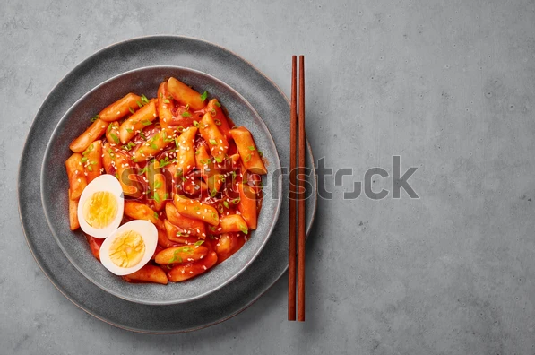

내일은 요리왕
떡볶이 조리법

재료: 떡볶이 떡 10개, 어묵 2장, 대파 1대, 설탕 3스푼, 고추장 2스푼, 간장 2스푼, 고춧가루 1.5스푼
설탕 3스푼, 고추장 2스푼, 간장 2스푼, 고춧가루 1.5스푼으로 양념을 만들어줍니다.
떡, 어묵 대파는 먹기 좋은 크기로 잘라줍니다.
냄비에 떡 어묵을 넣고 물 2컵을 넣은 후 양념과 함께 끓여줍니다.
어느정도 양념이 떡에 베이면 대파를 넣어줍니다.
완성!